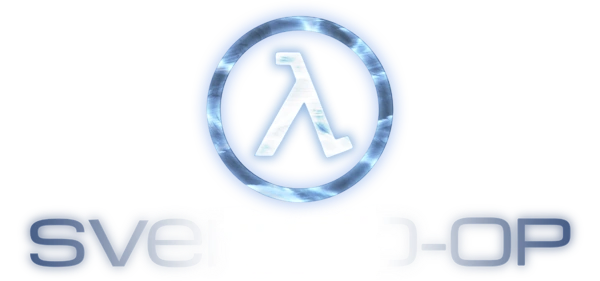

This repository contains Plugins, Map-Scripts, new entities and gamemodes that can be possible with AngelScript.
If not possible then we'll use
metamod
to make it possible.
If you need help with anything join our
Discord
server.
Plugins
MapScripts
Entities